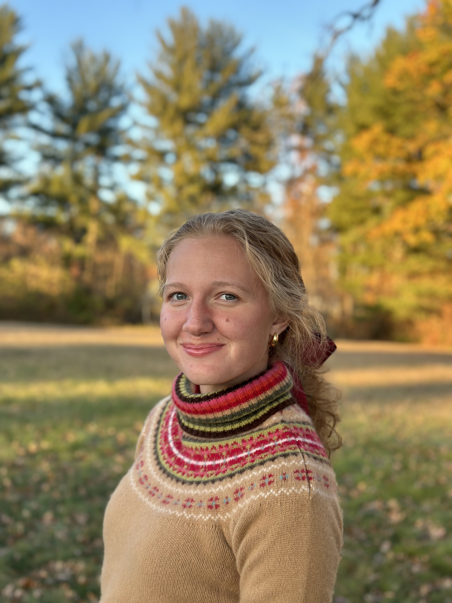
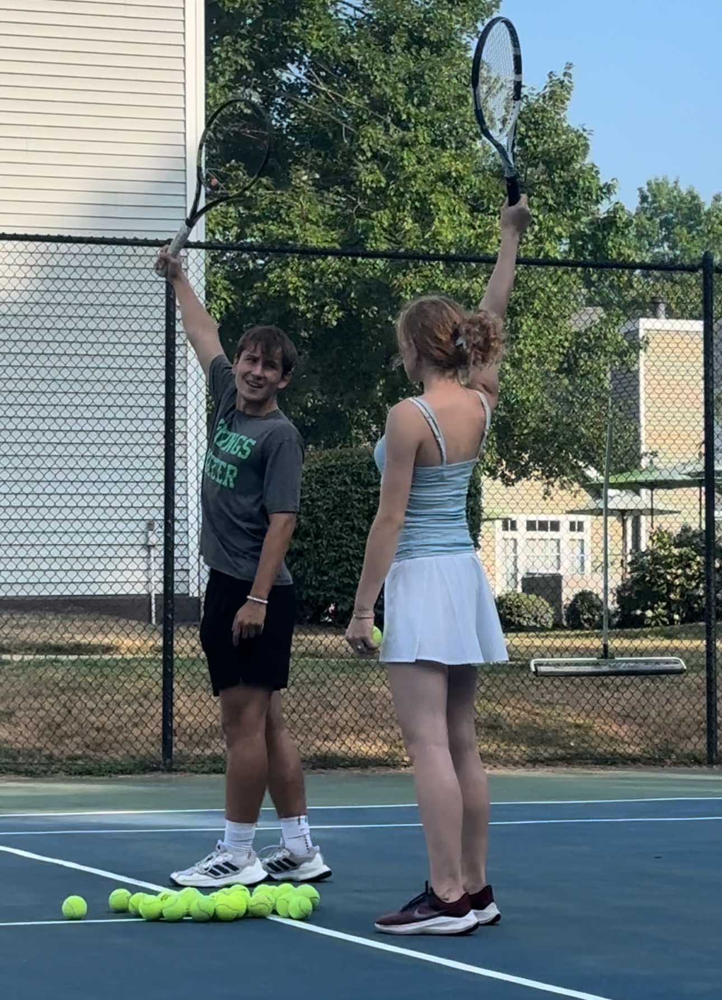
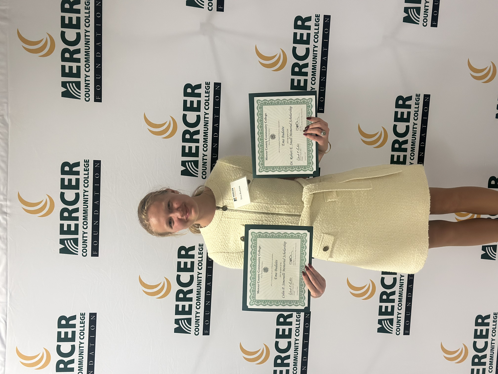
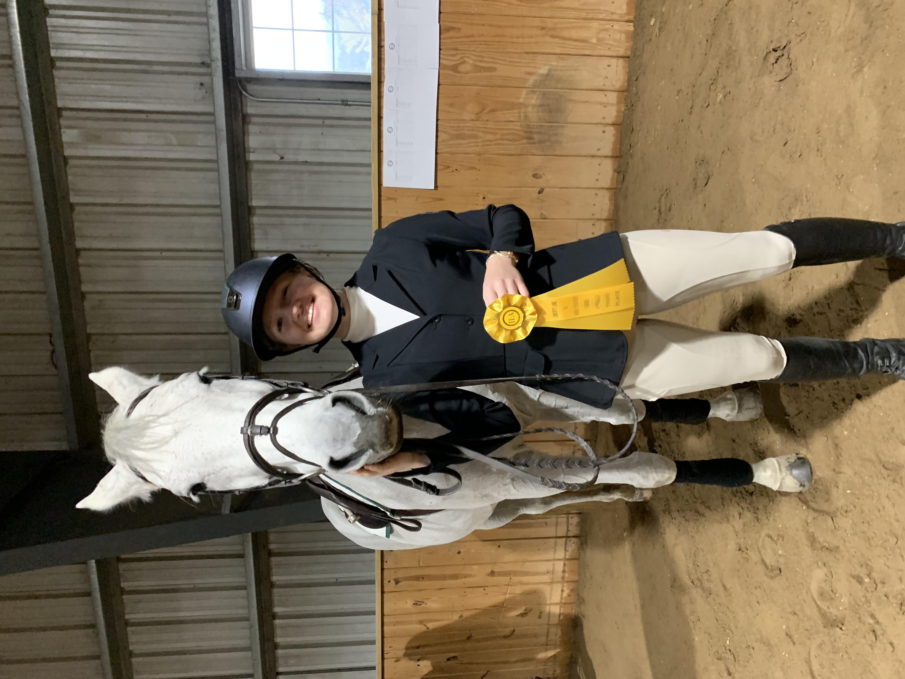
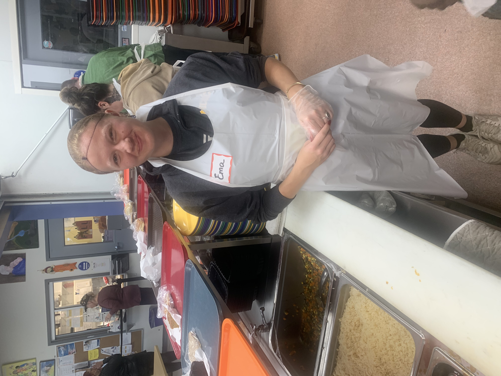

I am a dedicated and hardworking player on the NJCAA Division 1 Tennis Team at Mercer County Community College, driven by discipline and passion for the sport. This season, my team and I are set to compete in some of the biggest competitions, including nationals in Texas, as well as matches in South Carolina against top-tier opponents. With relentless dedication and a competitive mindset, I am determined to make a strong impact on the court this spring.

Off the court, I approach academics with the same dedication and drive. As a 4.0 GPA student and a proud member of Phi Theta Kappa (PTK), I strive for excellence in all aspects of my education. At my community college, I take every opportunity to enroll in Honors courses. Additionally, through an exclusive program between Mercer County Community College and Princeton University, I am taking advanced courses at one of the most prestigious institutions in the world.

Horses have been a significant part of my life for over seven years. I ride three times a week, continuously refining my skills in show jumping, hunt seat, and dressage. I have competed in interscholastic and international competitions, and I am currently preparing for a show jumping competition in March. The discipline and dedication required in equestrian sports have shaped my resilience and commitment, both in and out of the arena.

Giving back to the community has been an important part of my journey. I have volunteered at the Trenton Area Soup Kitchen, helping serve food to those in need and contributing to a cause that makes a meaningful impact. Additionally, I have spent time volunteering at Mercer County Park Stables, assisting with various tasks and gaining valuable experience working with horses. These experiences have reinforced my appreciation for service, teamwork, and the importance of making a difference in the lives of others.